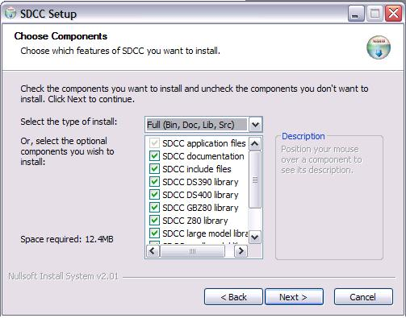
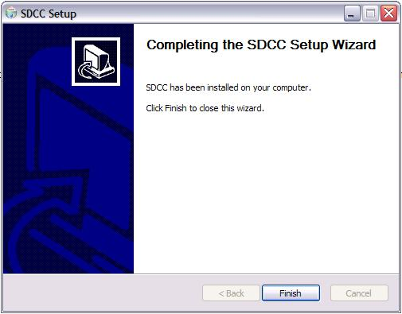

|
Taller de Robótica Básico - Skybot v1.4. - SESION 3 - Windows. Compilador SDCC |
En este capítulo Instalaremos el compilador SDCC.
El software del taller para Windows se ha probado con la versión del compilador SDCC-2.6.0. Es importante instalar la 2.6.0 ya que los programas compilados con versiones anteriores no funcionan correctamente
Para la instalacion del SDCC-2.6.0 necesitaremos descargarlo de esta página. Hay que usar la versión SDCC-WIN32 2.6.0 que es para windows.
Para comenzar la instalación ejecutaremos el archivo SDCC-2.6.0SETUP.EXE, desde la ubiación donde lo hayais descargado, con lo que se nos abrirá la siguiente ventana:
Pulsamos el botón “Next” y nos aparece la siguiente ventana:

Pinchamos en la botón “I Agree” . Y esta es la ventana siguiente:

Volvemos a Pulsar “Next” tras verificar el nombre que queremos ponerle al grupo de carpetas para el compilador.

Ahora decidimosque tipo de instalación queremos hacer. Si queremos cambiar la que figura por defecto, pulsaremos en el botón desplegable donde elegiremos entre las opciones Full, Medium y Compact o Custom, nosotros elegiremos la que viene por defecto “Full” y así seleccionaremos todas las librerias que trae el compiador.Tras pulsar “Next”, tenemos:

Ahora podemos elegir la ruta de instalación. Nosotros hemos dejado la que viene por defecto, y pulsamos ”Install”.



Con esto hemos finalizado la instalación. Tras pulsar el botón “Finish” completamos el proceso. Importante recodar que el compilador no crea un icono de acceso directo ni nada por el estilo. Sin embargo podemos acceder a determinadas opciones de configuración así como un acceso para desinstalarlo a traves de la ruta Inicio -> Programas ->SDCC.